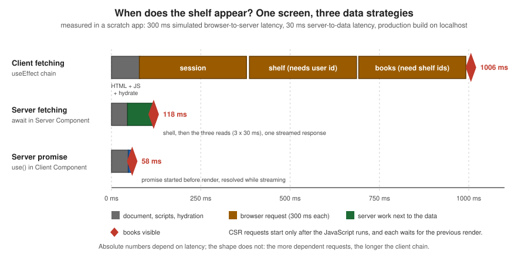

Client-Side Rendering
|
This content was generated with the assistance of AI and should be verified against the official documentation before being relied on in production. |
This page is written against Next.js 16.3.8 (the latest release on 2026-10-03, when the facts and examples below were
checked; the official documentation reports @doc-version 16.3.8), React 19.3.0 and Node.js 20.9.0 or later. It covers
the App Router in depth and the Pages Router side by side, because client-side rendering (CSR) is the one strategy
that looks identical in both routers and works very differently under the surface. Caching matters little for code that
runs in the browser, so most examples are independent of the caching model; where an example touches the server it says
whether it was verified with the previous model (the default) or with Cache Components
(cacheComponents: true); the examples that touch the server were built and run under both. Every example was built with next build
and served with next start (Node.js 24.16, macOS, Chrome driven by Playwright for the browser checks) in a scratch
copy of the Bookshelf — the catalogue of books, authors and reviews that this section grows — and the results quoted
below are what curl and the browser returned.
Client-side rendering means that the component that shows the data runs in the browser: the server sends a shell, the browser downloads JavaScript, React renders, effects fetch data, and React renders again. This page explains what that costs and buys, what Next.js still does on the server for a "client" component (more than most people expect), the three ways of keeping a component out of the server render, how to fetch on the client without races and waterfalls, how SWR and TanStack Query fit in, how to build a single-page application (SPA) or a static-export SPA with Next.js, and how all of it looks in the Pages Router. It builds on Rendering Fundamentals, which compares CSR with the other strategies, and on Server and Client Components, which explains the boundary. The sibling pages on static site generation, incremental static regeneration, hydration and partial prerendering are written alongside this one; hydration in particular owns the catalogue of mismatch errors that skipping SSR avoids.
What CSR Is and When It Is Still the Right Choice
In a strict SPA the whole application is one HTML file. Every route change and every data request is handled by JavaScript in the browser, and a full-page reload is never needed (this is the definition used by the official single-page-applications guide). Next.js does not force that model: it lets you choose per component, and what people call "CSR in Next.js" is usually one of three things.
| What | What the server does | What the browser does |
|---|---|---|
A Client Component that fetches in an effect (the |
Prerenders it once with its initial state (loading UI) at build time or per request, and sends that HTML. |
Hydrates, then runs the effect, fetches, and renders again with the data. |
A component loaded with |
Sends only its fallback. The component itself is not rendered on the server. |
Renders it for the first time after hydration. |
A strict SPA ( |
Nothing at request time: a static host serves one HTML file. |
Everything: routing, data, rendering. |
Source: Single-page applications and Lazy loading
CSR trades server work and first-paint speed for interactivity and simplicity. Use it where the trade is good:
| Good fit | Poor fit |
|---|---|
Highly interactive widgets: editors, charts, maps, drag and drop, dashboards whose state lives in the browser. |
Public content that must be indexed: product pages, articles, anything where the largest paint is data. |
Per-user screens behind a login that no crawler visits: an account page, the Bookshelf seller dashboard. |
Pages where the first visit decides the conversion: the data is never in the HTML, so the content paints last. |
Data that changes while the page is open: polling, focus revalidation, live prices, autocomplete. |
Chains of dependent requests that the server could run next to the data in one round trip (see the waterfall below). |
Browser-only APIs: |
Slow devices or networks: all the rendering work and all the dependencies move to the user’s CPU and connection. |
A migration from Create React App or Vite, where a working SPA must ship first and move to the server later. |
Secrets: nothing in a client-rendered component is private. |
The practical modern answer is rarely "CSR for the whole page". Server Components render the page shell and the data that everybody sees; a Client Component handles the interactive island, and fetches on the client only what depends on interaction. The React-level mechanics are covered in this site’s React section (Data Fetching and Effects and Lifecycle); this page is about what Next.js adds.
Client Components on First Load and on Navigation
A Client Component is not "client only". The 'use client' directive marks a boundary in the module graph; code on the
client side of it is shipped to the browser, but it is still rendered on the server for the first load. What differs
between the first load and later navigations is where the first render happens.
attach handlers, run effects Note over U,S: Navigation from another page of the same app U->>B: click a Link to /csr/first B->>S: RSC payload only (prefetched earlier, no HTML) S-->>B: payload with the props of the Client Component Note over B: First render happens in the browser, no server HTML,
no hydration, then effects run B-->>U: page updates without a reload
The scratch app has a component that logs where it renders and a link to it.
// components/RenderProbe.tsx
"use client";
import { useEffect, useState } from "react";
export function RenderProbe({ label }: { label: string }) {
const where = typeof window === "undefined" ? "server" : "browser";
console.log(`[probe] ${label} rendered on the ${where}`);
const [effectRan, setEffectRan] = useState(false);
useEffect(() => setEffectRan(true), []);
return <p data-testid="probe">{label}: effect ran = {String(effectRan)}</p>;
}The results for the route /csr/first (a Server Component page that renders <RenderProbe label="first" />) and a
page /csr/nav with <Link href="/csr/first">:
| Moment | Evidence | Meaning |
|---|---|---|
|
|
The Client Component is prerendered at build time; the route is |
Direct load of |
One |
Server HTML, hydration, effect: the full path. |
Click on the link in |
No |
The first render is in the browser, from the payload; there is no server HTML and no hydration. |
So "client-side rendering" in an App Router app is partly a matter of which request you are looking at: a hard load renders the Client Component on the server and in the browser, a soft navigation renders it only in the browser. The details of the router cache and prefetching are in Linking & Navigation; the server-side half of the story is in Server and Client Components.
Skipping SSR: Keeping a Component Out of the Server Render
Some components cannot run on the server: they read localStorage while rendering, wrap a library that touches
window at import time, or draw into a canvas. Rendering them on the server either throws (a ReferenceError during
prerender) or produces output that the browser then disagrees with (a hydration mismatch). There are three techniques,
and they differ in what ends up in the HTML.
// components/ShelfSummary.tsx
"use client";
import { useState } from "react";
// Reads localStorage while rendering: only safe where there is no server render.
export function ShelfSummary() {
const [ids] = useState(() => (localStorage.getItem("shelf") ?? "").split(",").filter(Boolean));
return <p data-testid="summary">{ids.length} saved books (from localStorage)</p>;
}Source: Lazy loading: skipping SSR
next/dynamic with ssr: false
next/dynamic is a composite of React.lazy() and <Suspense>, and behaves the same way in the app and pages
directories. With ssr: false the server does not render the component; it renders the loading component instead and
the browser fetches the component’s chunk and renders it after hydration. The option only works in a Client Component.
next/dynamic with ssr: false, in a Client Component"use client";
import dynamic from "next/dynamic";
const DynamicSummary = dynamic(() => import("./ShelfSummary").then((m) => m.ShelfSummary), {
ssr: false,
loading: () => <p data-testid="summary">Loading summary…</p>,
});
export function DynamicSkip() {
return <DynamicSummary />;
}Source: Lazy loading: next/dynamic
The HTML that curl received from the route that renders it contained the fallback and a marker, not the summary:
<template data-dgst="BAILOUT_TO_CLIENT_SIDE_RENDERING"></template><p data-testid="summary">Loading summary…</p>After hydration, with localStorage.shelf = "1,3", the paragraph read 2 saved books (from localStorage) and the
browser console was empty. The same call in a Server Component is rejected at build time. The build failed with:
Error: `ssr: false` is not allowed with `next/dynamic` in Server Components. Please move it into a Client Component.This restriction was introduced in Next.js 15 (listed as a breaking change in the 15 release notes) and holds in 16.3.8.
A dynamic import in a Server Component is still fine without ssr: false: only the Client Components below it are
lazy-loaded, and the lazy-loading guide notes that automatic code splitting is not currently supported when a Server
Component imports a Client Component dynamically.
Source: Lazy loading: skipping SSR and Next.js 15
use(browser()) (React 19.3)
React 19.3 (2026-09-09) added a first-class way to say "this component is browser-only": call browser() from
react-dom inside use(). During server rendering, use(browser()) stops rendering the component and leaves the
closest <Suspense> fallback in its place; in the browser it returns undefined and the component renders normally.
It replaces typeof window checks, a mounted flag, and the framework option for the cases it covers.
use(browser()) inside a Suspense boundary"use client";
import { Suspense, use } from "react";
import { browser } from "react-dom";
import { ShelfSummary } from "./ShelfSummary";
function BrowserOnlySummary() {
use(browser("The summary reads localStorage.")); // optional reason string
return <ShelfSummary />;
}
export function BrowserSkip() {
return (
<Suspense fallback={<p data-testid="summary">Loading summary…</p>}>
<BrowserOnlySummary />
</Suspense>
);
}Source: React: browser and React 19.3
Verified on 16.3.8: the HTML contained <template data-dgst=""></template><p data-testid="summary">Loading summary…</p>
(the fallback, no localStorage read), and after hydration the summary read 2 saved books, with no console errors.
The React documentation lists three caveats, and the first was reproduced:
-
It must be inside a
<Suspense>boundary during server rendering. Without one the server render fails; in the scratch appnext buildstopped with "The server render could not complete because client rendering was requested outside a Suspense boundary" (React error 603). -
It must be called from a Client Component, not a Server Component.
-
browser()by itself does nothing: pass its result touse, and never throw it.
Two-pass rendering with an effect
The oldest technique needs no API: render the same output on the server and in the first client render (a fallback), then switch after mount. Effects do not run on the server, so the second pass is client-only.
"use client";
import { useEffect, useState } from "react";
import { ShelfSummary } from "./ShelfSummary";
export function TwoPassSkip() {
const [mounted, setMounted] = useState(false);
useEffect(() => setMounted(true), []);
if (!mounted) return <p data-testid="summary">Loading summary…</p>;
return <ShelfSummary />;
}The HTML again contained only the fallback, and the summary appeared after hydration. Because the first client render equals the server render, there is no hydration mismatch; the cost is one extra render and a flash of the fallback.
Choosing between them
next/dynamic with ssr: false |
use(browser()) |
Mounted flag | |
|---|---|---|---|
Code splitting |
Yes: the component’s chunk is fetched on demand. |
No by itself (combine with |
No by itself. |
What the HTML contains |
The |
The |
Whatever the |
Needs a Suspense boundary |
No (it has |
Yes, or the build fails. |
No. |
Where it may be called |
Client Components only. |
Client Components only. |
Client Components only. |
Works in the Pages Router |
Yes. |
React 19.3 only (the Pages Router still supports React 18). |
Yes. |
Best for |
A big or browser-only library you want out of the main bundle. |
A small browser-only branch (localStorage, time zone) inside an otherwise server-rendered tree. |
Any version of React; a quick fix. |
or differs between server and browser"] --> B{"Can it simply not read
browser state while rendering?"} B -->|"yes: move the read into an effect"| C["Plain Client Component,
the effect sets state"] B -->|"no"| D{"Large or window-dependent
library, worth a separate chunk?"} D -->|"yes"| E["next/dynamic with ssr: false
in a Client Component"] D -->|"no"| F{"React 19.3 available?"} F -->|"yes"| G["use(browser()) inside Suspense"] F -->|"no"| H["Mounted flag: two-pass rendering"]
Source: Lazy loading and React: browser
Two related notes. suppressHydrationWarning hides a mismatch on one element but does not fix it, and the inline-script
pattern for avoiding a flash of the wrong theme before hydration has its own guide; both belong to the hydration page of
this section. And skipping SSR removes the component from the HTML for crawlers and for users without JavaScript, so
keep it for content that is not meant to be indexed.
Fetching Data on the Client Correctly
The textbook pattern is a useEffect that calls fetch and sets state. It is also the pattern most often written
wrongly. A tutorial-style version, with no cleanup and no status check:
// components/NaiveSearch.tsx
"use client";
import { useEffect, useState } from "react";
type Book = { id: string; title: string };
export function NaiveSearch() {
const [q, setQ] = useState("");
const [results, setResults] = useState<Book[]>([]);
useEffect(() => {
fetch(`/api/csr/search?q=${q}`)
.then((r) => r.json())
.then((data) => setResults(data));
}, [q]);
return (
<div>
<input aria-label="Search" value={q} onChange={(e) => setQ(e.target.value)} />
<ul data-testid="results">
{results.map((b) => (
<li key={b.id}>{b.title}</li>
))}
</ul>
</div>
);
}It has four defects: the query is not URL-encoded; an HTTP error is parsed as if it were data; a network error is an
unhandled rejection; and, worst, responses can arrive out of order, so an old answer overwrites a newer one. The race
is easy to reproduce. The scratch Route Handler answers short queries more slowly than long ones (s after 400 ms,
sol after 50 ms), which is what a loaded server or a mobile network does at random:
// app/api/csr/search/route.ts
import { listBooks } from "@/lib/books";
const sleep = (ms: number) => new Promise<void>((r) => setTimeout(r, ms));
export async function GET(request: Request) {
const q = new URL(request.url).searchParams.get("q") ?? "";
await sleep(Math.max(50, 700 - q.length * 300)); // "s" -> 400 ms, "sol" -> 50 ms
return Response.json(await listBooks(q));
}Source: Route Handlers
Typing s, o, l quickly in Chrome (Playwright, 30 ms between keys) left these results after 1.2 seconds:
| Component | Results shown | Why |
|---|---|---|
|
|
The slow answer for |
|
|
The effect cleanup aborted the earlier requests, so only the latest query can update state. |
The corrected component starts a new AbortController per effect run, aborts it in the cleanup (which React runs
before the next effect and on unmount), treats an AbortError as "superseded", checks res.ok, encodes the query, and
models the states explicitly.
// components/BookSearch.tsx
"use client";
import { useEffect, useState } from "react";
type Book = { id: string; title: string; author: string };
type State =
| { status: "idle" }
| { status: "loading" }
| { status: "error"; message: string }
| { status: "done"; books: Book[] };
export function BookSearch() {
const [q, setQ] = useState("");
const [state, setState] = useState<State>({ status: "idle" });
useEffect(() => {
if (q.trim() === "") {
setState({ status: "idle" });
return;
}
const controller = new AbortController(); // one controller per effect run
setState({ status: "loading" });
fetch(`/api/csr/search?q=${encodeURIComponent(q)}`, { signal: controller.signal })
.then((res) => {
if (!res.ok) throw new Error(`Request failed: ${res.status}`);
return res.json() as Promise<Book[]>;
})
.then((books) => setState({ status: "done", books }))
.catch((err) => {
if (err.name === "AbortError") return; // superseded by a newer query: ignore
setState({ status: "error", message: err.message });
});
return () => controller.abort(); // runs before the next effect and on unmount
}, [q]);
return (
<div>
<input aria-label="Search" value={q} onChange={(e) => setQ(e.target.value)} />
{state.status === "loading" && <p>Searching…</p>}
{state.status === "error" && <p role="alert">{state.message}</p>}
<ul data-testid="results">
{state.status === "done" &&
state.books.map((b) => (
<li key={b.id}>
{b.title} by {b.author}
</li>
))}
</ul>
</div>
);
}In development, React’s Strict Mode mounts, unmounts and mounts a component once to expose missing cleanup, so you will
see the first request cancelled and a second one made; that is the cleanup working, not a bug. Even corrected, a
hand-written effect has no cache, no deduplication, no retry and no revalidation, which is why the official guides
recommend a library for anything beyond a single read (see below). For a read that is needed only once, the first
choice in the Next.js client-data-fetching guide is not a library at all but a promise started on the server and
unwrapped with use().
Waterfalls: Client Fetching Versus Server-Fetched Data
A network waterfall is a chain of requests where each cannot start until the previous one has finished and rendered. Client fetching makes them easy to create, because a component only starts fetching after it has mounted, and it only mounts after its parent has rendered its own data. The scratch app has a shelf that needs three dependent reads: the session (to get the user id), the shelf (the book ids of that user), and the books (by id).
// components/ShelfWaterfall.tsx (the three effects, abbreviated)
"use client";
import { useEffect, useState } from "react";
async function getJson<T>(url: string, signal: AbortSignal): Promise<T> {
const res = await fetch(url, { signal });
if (!res.ok) throw new Error(`${url}: ${res.status}`);
return res.json();
}
export function ShelfWaterfall() {
const [userId, setUserId] = useState<string | null>(null);
const [ids, setIds] = useState<string[] | null>(null);
const [books, setBooks] = useState<{ id: string; title: string }[] | null>(null);
useEffect(() => {
const controller = new AbortController();
getJson<{ userId: string }>("/api/csr/session", controller.signal)
.then((s) => setUserId(s.userId))
.catch(() => {}); // abort and error handling as in BookSearch
return () => controller.abort();
}, []);
useEffect(() => {
if (!userId) return; // waits for the first request
const controller = new AbortController();
getJson<string[]>(`/api/csr/shelf?user=${userId}`, controller.signal)
.then(setIds)
.catch(() => {});
return () => controller.abort();
}, [userId]);
useEffect(() => {
if (!ids) return; // waits for the second request
const controller = new AbortController();
getJson<{ id: string; title: string }[]>(`/api/csr/books?ids=${ids.join(",")}`, controller.signal)
.then(setBooks)
.catch(() => {});
return () => controller.abort();
}, [ids]);
if (!books) return <p data-testid="shelf">Loading shelf…</p>;
return (
<ul data-testid="shelf">
{books.map((b) => (
<li key={b.id}>{b.title}</li>
))}
</ul>
);
}The server alternatives do the same three dependent reads. In the first, a Server Component awaits them next to the
data; in the second, the page starts one promise and passes it to a Client Component that unwraps it with use(), so
the HTML shell is sent immediately and the data streams in.
// app/csr/server/page.tsx
import { Suspense } from "react";
import { connection } from "next/server";
import { getSession, getShelfIds, getBooksByIds } from "@/lib/shelf-data";
async function Shelf() {
await connection(); // per request: the shelf belongs to the reader
// Same three dependent reads, but next to the data: three short hops, one response.
const session = await getSession(30);
const ids = await getShelfIds(session.userId, 30);
const books = await getBooksByIds(ids, 30);
return (
<ul data-testid="shelf">
{books.map((b) => (
<li key={b.id}>{b.title}</li>
))}
</ul>
);
}
export default function Page() {
return (
<main>
<h1>My shelf (server-fetched)</h1>
<Suspense fallback={<p data-testid="shelf">Loading shelf…</p>}>
<Shelf />
</Suspense>
</main>
);
}// app/csr/promise/page.tsx
import { Suspense } from "react";
import { connection } from "next/server";
import { getBooksByIds } from "@/lib/shelf-data";
import { ShelfFromPromise } from "@/components/ShelfFromPromise";
async function Shelf() {
await connection(); // per request
const booksPromise = getBooksByIds(["1", "3"], 30); // started on the server, not awaited
return <ShelfFromPromise booksPromise={booksPromise} />;
}
export default function Page() {
return (
<main>
<h1>My shelf (promise to a Client Component)</h1>
<Suspense fallback={<p data-testid="shelf">Loading shelf…</p>}>
<Shelf />
</Suspense>
</main>
);
}
// components/ShelfFromPromise.tsx
// "use client";
// import { use } from "react";
// export function ShelfFromPromise({ booksPromise }: { booksPromise: Promise<{ id: string; title: string }[]> }) {
// const books = use(booksPromise); // suspends until the server resolves the promise
// return <ul data-testid="shelf">{books.map((b) => <li key={b.id}>{b.title}</li>)}</ul>;
// }Source: Fetching data: streaming with the use API and React: use
The numbers below are from next start in Chrome, with the CSR endpoints answering after a simulated 300 ms (a slow
mobile round trip) and the server-side reads after 30 ms (co-located data). The shape matters more than the absolute
values: the client chain is latency x number of dependent requests, plus the time before the JavaScript can start it.
| Strategy | Books visible | Why |
|---|---|---|
Client effects ( |
about 1006 ms |
HTML and JavaScript first (the first request started at about 80 ms), then three requests of 300 ms in a row (started at 78, 386 and 692 ms). |
|
about 118 ms |
The shell was sent first; three 30 ms reads ran next to the data; the result streamed in one response. No browser request was made. |
Promise and |
about 58 ms |
One read, started before render; the shell and the data arrived in the same streamed response. |

How to avoid client waterfalls when you must fetch on the client:
-
Start earlier. Start the request in a Server Component and pass the promise down (above), or prefetch with a library (
queryClient.prefetchQuery, SWRpreload) before the component that needs it renders. -
Fetch in parallel. Requests that do not depend on each other belong in sibling components or one
Promise.all. The official guides note that independent Suspense reads in sibling components start in parallel, while several Suspense reads in one component run sequentially. -
Collapse dependent requests. Three dependent calls behind one Route Handler (a backend for frontend) cost one round trip from the browser instead of three.
-
Do not move data fetching into the browser just to avoid
await. If the server can read it, read it there.
SWR and TanStack Query, Optionally Seeded from the Server
When client components need a shared browser cache, focus revalidation, polling, request deduplication or optimistic updates, use a data-fetching library. The Next.js guide names SWR, TanStack Query and Apollo Client and frames three patterns:
| Pattern | SWR | TanStack Query | When data is available |
|---|---|---|---|
Inline loading states |
|
|
Browser request after hydration. |
Suspense loading states |
|
|
Browser request after hydration. |
Provided by the server |
|
|
Initial render, or streamed from the server. |
Source: Client-side data fetching
Client-only: autocomplete with SWR
For a result that depends on a keystroke there is nothing to seed, so the request is made in the browser. SWR’s null
key means "do not fetch yet".
swr 2.5.1)// components/SwrSearch.tsx
"use client";
import { useState } from "react";
import useSWR from "swr";
type Book = { id: string; title: string };
async function fetcher(url: string): Promise<Book[]> {
const res = await fetch(url);
if (!res.ok) throw new Error("Failed to fetch books");
return res.json();
}
export function SwrSearch() {
const [q, setQ] = useState("");
const { data = [], error, isLoading } = useSWR(
q ? `/api/csr/search?q=${encodeURIComponent(q)}` : null, // null key: no request yet
fetcher,
);
return (
<div>
<input aria-label="Search" value={q} onChange={(e) => setQ(e.target.value)} />
{error && <p role="alert">Failed to load books.</p>}
{isLoading && <p>Searching…</p>}
<ul data-testid="results">
{data.map((b) => (
<li key={b.id}>{b.title}</li>
))}
</ul>
</div>
);
}Typing sol in the browser produced Solaris. SWR stores each result under its request key, so a late answer for an
old key cannot replace the current one, and it deduplicates identical requests; the hand-written effect had to do both
by hand.
Seeded from the server: SWR fallback
When the first render needs the data, a Server Component starts the read and gives the Promise to <SWRConfig> as
fallback; React passes the Promise through the RSC payload, and the component reading the key suspends until it
resolves. SWR 2.3.0 and React 19 are required. The key must be defined once and shared.
// app/csr/swr/[id]/book-cache.ts
export const bookCache = {
key: (id: string) => `/api/csr/book/${id}`,
};// app/csr/swr/[id]/page.tsx
import { Suspense } from "react";
import { SWRConfig } from "swr";
import { getBook } from "@/lib/books";
import { bookCache } from "./book-cache";
import { BookView } from "./book-view";
export default function Page({ params }: PageProps<"/csr/swr/[id]">) {
return (
<Suspense fallback={<p>Loading…</p>}>
{params.then(({ id }) => (
<BookData id={id} />
))}
</Suspense>
);
}
function BookData({ id }: { id: string }) {
return (
<SWRConfig
value={{
fallback: {
// Not awaited: only the component that reads this key suspends.
[bookCache.key(id)]: getBook(id),
},
}}
>
<BookView id={id} />
</SWRConfig>
);
}// app/csr/swr/[id]/book-view.tsx
"use client";
import useSWR from "swr";
import { bookCache } from "./book-cache";
type Book = { id: string; title: string; author: string };
async function fetcher(url: string): Promise<Book> {
const res = await fetch(url);
if (!res.ok) throw new Error("Failed to fetch book");
return res.json();
}
export function BookView({ id }: { id: string }) {
const { data } = useSWR(bookCache.key(id), fetcher, { suspense: true });
return (
<h1 data-testid="title">
{data.title} by {data.author}
</h1>
);
}curl returned the title in the HTML (Neuromancer by William Gibson); the browser then made one request to
/api/csr/book/2, because SWR treats fallback data as stale and revalidates on mount. The setting
revalidateIfStale: false skips that request. If the two keys drift apart, SWR ignores the fallback and fetches on the
client, so keep one definition.
Seeded from the server: TanStack Query HydrationBoundary
TanStack Query needs a provider that creates one query client per server render and one in the browser:
// app/csr/tanstack/providers.tsx
"use client";
import type { ReactNode } from "react";
import { QueryClient, QueryClientProvider } from "@tanstack/react-query";
let browserQueryClient: QueryClient | undefined;
function getQueryClient() {
// New client per server render (requests stay isolated); one client in the browser.
if (typeof window === "undefined") return new QueryClient();
browserQueryClient ??= new QueryClient();
return browserQueryClient;
}
export function Providers({ children }: { children: ReactNode }) {
return <QueryClientProvider client={getQueryClient()}>{children}</QueryClientProvider>;
}// app/csr/tanstack/[id]/book-cache.ts
import { queryOptions } from "@tanstack/react-query";
export type Book = { id: string; title: string; author: string };
export const bookCache = {
key: (id: string) => ["book", id] as const,
options: (id: string) =>
queryOptions({
queryKey: bookCache.key(id),
queryFn: async (): Promise<Book> => {
const res = await fetch(`/api/csr/book/${id}`);
if (!res.ok) throw new Error("Failed to fetch book");
return res.json();
},
staleTime: 30_000,
}),
};// app/csr/tanstack/[id]/page.tsx
import { Suspense } from "react";
import {
defaultShouldDehydrateQuery,
dehydrate,
HydrationBoundary,
QueryClient,
} from "@tanstack/react-query";
import { getBook } from "@/lib/books";
import { bookCache } from "./book-cache";
import { BookView } from "./book-view";
export default function Page({ params }: PageProps<"/csr/tanstack/[id]">) {
return (
<Suspense fallback={<p>Loading…</p>}>
{params.then(({ id }) => (
<BookData id={id} />
))}
</Suspense>
);
}
function BookData({ id }: { id: string }) {
const queryClient = new QueryClient();
// Not awaited, so rendering is not blocked; the server overrides queryFn (a relative URL only works in the browser).
void queryClient.prefetchQuery({
...bookCache.options(id),
queryFn: async () => {
const book = await getBook(id);
if (!book) throw new Error("Book not found");
return book;
},
});
return (
<HydrationBoundary
state={dehydrate(queryClient, {
shouldDehydrateQuery: (query) =>
defaultShouldDehydrateQuery(query) || query.state.status === "pending",
})}
>
<BookView id={id} />
</HydrationBoundary>
);
}// app/csr/tanstack/[id]/book-view.tsx
"use client";
import { useSuspenseQuery } from "@tanstack/react-query";
import { bookCache } from "./book-cache";
export function BookView({ id }: { id: string }) {
const { data } = useSuspenseQuery(bookCache.options(id));
return (
<h1 data-testid="title">
{data.title} by {data.author}
</h1>
);
}With @tanstack/react-query 5.104.1 (the guide requires 5.40.0 or later to dehydrate pending queries), curl
returned Solaris by Stanislaw Lem in the HTML, and the browser made no request after load, because staleTime
is 30 seconds. That is the practical difference between the two libraries: SWR revalidates a fallback on mount, TanStack
Query honours staleTime. Both stay in control after hydration (focus, reconnect and mutations).
| SWR | TanStack Query | |
|---|---|---|
Server hands over |
A Promise in |
A dehydrated cache in |
Freshness of seeded data |
Treated as stale: revalidates on mount unless |
Controlled by |
Per-request isolation |
Not needed on the server. |
Required: a new |
Key mismatch |
Fallback ignored, client fetches. |
Query is not found, client fetches. |
Mutations |
|
|
Source: Client-side data fetching
The Cache Components model adds a third cache to this picture ('use cache' and cacheTag for the server read behind
the fallback, the router cache for the payload, the library’s own cache in the browser). The three layers keep
independent freshness policies and must be invalidated together after a mutation (updateTag in a Server Action for
read-your-own-writes, revalidateTag(tag, 'max') for stale-while-revalidate); the caching pages of this section cover
the server side. Both seeded pages built and returned the data in the HTML with cacheComponents on and off.
Worked Example: the Bookshelf "Find on the Shelf" Page
The Bookshelf catalogue page is a Server Component, so its list is in the HTML for crawlers. On top of it sits an interactive search that is deliberately client-rendered: it depends on every keystroke, it is not worth indexing, and the user expects results as they type. The page is a thin Server Component shell and the search is one Client Component.
// app/csr/search/page.tsx
import { BookSearch } from "@/components/BookSearch"; // the corrected component above
export default function Page() {
return (
<main>
<h1>Search the Bookshelf</h1>
<BookSearch />
</main>
);
}Build and run it:
$ npx next build # previous model
$ npx next start -p 3501
$ curl -s localhost:3501/csr/search | grep -o '<h1>[^<]*</h1>\|data-testid="results">[^<]*'
<h1>Search the Bookshelf</h1>
data-testid="results">The HTML contains the heading and an empty results list: the results are client-rendered. In Chrome, typing sol showed
Solaris by Stanislaw Lem, and a quick s-o-l sequence ended with the same list, not the stale one from s. The
route table lists /csr/search as ○ (static) and the Route Handler as ƒ:
next build route table (previous model, trimmed to this page’s routes)Route (app)
├ ƒ /api/csr/search
├ ○ /csr/search
├ ○ /csr/waterfall
├ ƒ /csr/server
├ ƒ /csr/promise
├ ƒ /csr/skip
├ ○ /csr/spa
├ ○ /csr/shallow
├ ƒ /csr/swr/[id]
└ ƒ /csr/tanstack/[id]
Route (pages)
─ ○ /csr-legacy/shelf
ƒ Proxy (Middleware)With cacheComponents: true the same build succeeded and marked the Suspense-streamed pages ◐ (Partial Prerender). To
get there, two pages had to change: awaiting searchParams (the skip page) and connection() (the server and promise
pages) must sit inside a <Suspense> boundary, otherwise the build fails with blocking-prerender-dynamic. The
examples above already show the corrected form. Note also that next start must be given the same configuration as
next build: starting the Cache Components build without the environment switch that enabled it returned HTTP 500
with DYNAMIC_SERVER_USAGE for the Suspense-streamed routes in this scratch app.
SPA Mode
The official single-page-applications guide shows four patterns that make a Next.js app behave like an SPA while keeping the server available. The first two are the ones that matter for client-side rendering.
Context-held promises with use()
Start a request in a Server Component high in the tree without awaiting it, pass the Promise to a context provider,
and unwrap it with use() in any Client Component. The server starts the work early, the shell streams immediately,
and no client request waterfall forms. The provider and the consumer:
// app/csr/spa/layout.tsx
import { getSession } from "@/lib/shelf-data";
import { SessionProvider } from "./session-provider";
export default function Layout({ children }: LayoutProps<"/csr/spa">) {
const sessionPromise = getSession(30); // do NOT await
return <SessionProvider sessionPromise={sessionPromise}>{children}</SessionProvider>;
}// app/csr/spa/session-provider.tsx
"use client";
import { createContext, use, useContext } from "react";
type Session = { userId: string; name: string };
const SessionContext = createContext<Promise<Session> | null>(null);
export function useSessionPromise() {
const p = useContext(SessionContext);
if (!p) throw new Error("useSessionPromise must be used within a SessionProvider");
return p;
}
export function SessionProvider({
children,
sessionPromise,
}: {
children: React.ReactNode;
sessionPromise: Promise<Session>;
}) {
return <SessionContext.Provider value={sessionPromise}>{children}</SessionContext.Provider>;
}
export function Greeting() {
const session = use(useSessionPromise());
return <p data-testid="greeting">Hello, {session.name}</p>;
}// app/csr/spa/page.tsx
import { Suspense } from "react";
import { Greeting } from "./session-provider";
export default function Page() {
return (
<main>
<h1>SPA shell</h1>
<Suspense fallback={<p data-testid="greeting">Loading…</p>}>
<Greeting />
</Suspense>
</main>
);
}curl returned Hello, Ada already in the streamed HTML (the data was resolved while the response was open), and the
browser made no data request. Two cautions from the guide: refetching a promise set high in the tree re-runs the Server
Component that set it, so place the provider on the subtree that needs the data rather than in the root layout; and wrap
a shared function in React’s cache if several components read it in one request.
Shallow routing with history.pushState
Migrating SPAs often have code that updates the URL without navigating (sort order, filters, tabs). Next.js integrates
the native window.history.pushState and replaceState into the router, so usePathname and useSearchParams stay
in sync, and no server round trip happens.
// components/SortShelf.tsx
"use client";
import { useSearchParams } from "next/navigation";
const titles = ["Dune", "Neuromancer", "Solaris"];
export function SortShelf() {
const searchParams = useSearchParams();
const sort = searchParams?.get("sort") === "desc" ? "desc" : "asc";
const sorted = sort === "asc" ? titles : [...titles].reverse();
function updateSorting(order: "asc" | "desc") {
const params = new URLSearchParams(searchParams?.toString());
params.set("sort", order);
// Shallow routing: URL changes, no navigation request, hooks stay in sync
window.history.pushState(null, "", `?${params.toString()}`);
}
return (
<div>
<button onClick={() => updateSorting("asc")}>Sort A-Z</button>
<button onClick={() => updateSorting("desc")}>Sort Z-A</button>
<ol data-testid="list">
{sorted.map((t) => (
<li key={t}>{t}</li>
))}
</ol>
<p data-testid="sort">sort={sort}</p>
</div>
);
}// app/csr/shallow/page.tsx
import { Suspense } from "react";
import { SortShelf } from "@/components/SortShelf";
export default function Page() {
return (
<main>
<h1>Shallow routing</h1>
<Suspense fallback={<p>Loading…</p>}>
<SortShelf />
</Suspense>
</main>
);
}In Chrome, clicking Sort Z-A changed the URL to /csr/shallow?sort=desc, the sort readout to sort=desc and the
list to Solaris, Neuromancer, Dune, and the only request after the click was the favicon: no document, no payload.
Two details are easy to trip on, and both were reproduced:
-
useSearchParamsmust be under a<Suspense>boundary on a prerendered route. Without it the previous model failed with "useSearchParams() should be wrapped in a suspense boundary" (missing-suspense-with-csr-bailout), and Cache Components failed with "Next.js encountered URL datauseSearchParams()in a Client Component outside of<Suspense>`" (`blocking-prerender-client-hook, part of the 16.3 Instant Navigations work). -
If the app also has a
pages/directory,useSearchParamsreturnsReadonlyURLSearchParams | null(thenullis a migration compatibility value), and TypeScript rejectssearchParams.get(…)until you writesearchParams?.get(…). The scratch app mixes both routers, so the example above uses the optional chaining that is valid in either case.
The other two SPA patterns in the guide are mutations with Server Actions (call the action inside useTransition, add
useOptimistic and useActionState for instant-feeling updates) and the library-based coordination shown earlier.
A static-export SPA
A strict SPA that any static host can serve: output: 'export', one catch-all route prerendered for /, and the whole
application behind ssr: false. This is the shape the Vite and Create React App migration guides recommend as a first
step, because it keeps the existing client router.
import type { NextConfig } from "next";
const nextConfig: NextConfig = {
output: "export", // `next build` writes the static site to out/
};
export default nextConfig;// app/[[...slug]]/page.tsx
import { ClientOnly } from "./client";
export function generateStaticParams() {
return [{ slug: [""] }]; // one prerendered entry point: the empty slug, "/"
}
export default function Page() {
return <ClientOnly />;
}
// app/[[...slug]]/client.tsx
// "use client";
// import dynamic from "next/dynamic";
// const App = dynamic(() => import("../../src/App"), { ssr: false, loading: () => <p>Loading the Bookshelf…</p> });
// export function ClientOnly() { return <App />; }// src/App.tsx
import { useEffect, useState } from "react";
type Book = { id: string; title: string; author: string };
// A tiny client-side router: the path is state, links call history.pushState.
function usePath() {
const [path, setPath] = useState(() => window.location.pathname);
useEffect(() => {
const onPop = () => setPath(window.location.pathname);
window.addEventListener("popstate", onPop);
return () => window.removeEventListener("popstate", onPop);
}, []);
function navigate(to: string) {
window.history.pushState(null, "", to);
setPath(to);
}
return { path, navigate };
}
function useBooks() {
const [books, setBooks] = useState<Book[] | null>(null);
useEffect(() => {
const controller = new AbortController();
fetch("/books.json", { signal: controller.signal }) // a static file from public/
.then((r) => r.json())
.then(setBooks)
.catch((e) => e.name !== "AbortError" && console.error(e));
return () => controller.abort();
}, []);
return books;
}
export default function App() {
const { path, navigate } = usePath();
const books = useBooks();
if (!books) return <p>Loading books…</p>;
const match = path.match(/^\/books\/(\w+)\/?$/);
if (match) {
const book = books.find((b) => b.id === match[1]);
return (
<main>
<a href="/" onClick={(e) => { e.preventDefault(); navigate("/"); }}>All books</a>
<h1 data-testid="view">{book ? `${book.title} by ${book.author}` : "Not found"}</h1>
</main>
);
}
return (
<main>
<h1 data-testid="view">Bookshelf</h1>
<ul>
{books.map((b) => (
<li key={b.id}>
<a href={`/books/${b.id}`} onClick={(e) => { e.preventDefault(); navigate(`/books/${b.id}`); }}>
{b.title}
</a>
</li>
))}
</ul>
</main>
);
}next build printed one route, /[[…slug]] with ● for /, and wrote out/index.html, out/404.html and the
payload files. The prerendered <div id="root"> contains only the BAILOUT_TO_CLIENT_SIDE_RENDERING marker and the
Loading the Bookshelf… text. Served with a static host that returns index.html for unknown paths (a small Node
script standing in for the "404 to /index.html with status 200" rule that S3 and CloudFront, Nginx try_files or
Netlify redirects provide), the browser results were:
| Step | Result |
|---|---|
Open |
The heading |
Click |
URL |
Back button |
URL |
Open |
The host served |
The limits of this model are the limits of a static export: no Server Actions, cookies, rewrites, redirects, headers,
Proxy, Draft Mode, ISR or intercepting routes, no default image optimizer, and dynamic routes need
generateStaticParams (see the unsupported-features list in the static exports guide, and
Redirects, Rewrites & Proxy for what you lose with Proxy). Deep links
depend on a host-level rewrite to index.html, because the build only generates /. The full static-export story,
including hosting on S3 and CloudFront, belongs to the static site generation page of this section.
Pages Router Comparison
In the Pages Router every page component is a Client Component in the App Router sense: it is rendered on the server
(or at build time) and hydrated, and client-side rendering means not defining getServerSideProps or
getStaticProps and fetching in an effect instead. The official page names two ways: a useEffect in the page, or a
data-fetching library (recommended).
○ in the Route (pages) table)// pages/csr-legacy/shelf.tsx
import { useEffect, useState } from "react";
import dynamic from "next/dynamic";
type Book = { id: string; title: string; author: string };
const SummaryBox = dynamic(() => import("@/components/ShelfSummary").then((m) => m.ShelfSummary), {
ssr: false,
loading: () => <p data-testid="summary">Loading summary…</p>,
});
export default function LegacyShelf() {
const [books, setBooks] = useState<Book[] | null>(null);
useEffect(() => {
const controller = new AbortController();
fetch("/api/books", { signal: controller.signal })
.then((r) => r.json())
.then(setBooks)
.catch((e) => e.name !== "AbortError" && console.error(e));
return () => controller.abort();
}, []);
return (
<main>
<h1>Legacy shelf (Pages Router, client-side)</h1>
<SummaryBox />
{books ? <ul data-testid="shelf">{books.map((b) => <li key={b.id}>{b.title}</li>)}</ul> : <p data-testid="shelf">Loading…</p>}
</main>
);
}curl returned Legacy shelf (Pages Router, client-side), the summary fallback and Loading…; after hydration, with
localStorage.shelf = "1", the list showed all three books and the summary read 1 saved books (from localStorage).
A page without getServerSideProps or getInitialProps is prerendered automatically (Automatic Static Optimization),
so this page costs no server work per request.
| Topic | App Router | Pages Router |
|---|---|---|
Default component type |
Server Component; add |
Every page and component is a Client Component in the App Router sense (rendered on the server, then hydrated). |
How a page becomes client-rendered |
A Client Component that fetches in an effect or library, or |
No |
Prerender of the shell |
Server-prerendered unless skipped; |
Automatic Static Optimization; |
|
Client Components only; an error in Server Components since 15. |
Allowed in pages and components (same API; the guide says it behaves the same in both directories). |
Route params on first render |
|
For a prerendered page with a dynamic route or query, |
Client navigation |
Soft navigation fetches an RSC payload; shallow routing with |
Soft navigation fetches JSON ( |
Data libraries |
SWR, TanStack Query seeded with |
SWR and TanStack Query (recommended by the official page), seeded through |
Recommended for new work |
Yes. |
Supported, legacy for new projects. |
The shallow-routing API of the Pages Router (router.push with { shallow: true }) is only listed here as a pointer to
the router reference; it was not run for this page.
Bundle-Size Impact
Everything on the client side of a 'use client' boundary is JavaScript the user downloads, parses and executes. CSR
makes that cost visible: a Server Component sends no JavaScript for itself, a Client Component that fetches and renders
on the client sends all of it, plus the libraries it imports. Three tools keep it down.
Load rarely used code on demand. The lazy-loading guide’s example loads fuse.js (a fuzzy-search library) only after the
user types. The scratch app compares a static import with a dynamic one in two otherwise identical pages; the numbers
are the gzip size of the script files referenced by each route’s HTML:
fuse.js (production build, gzip of the scripts in the HTML)// components/FuseLazy.tsx
"use client";
import { useState } from "react";
const titles = ["Dune", "Neuromancer", "Solaris", "Hyperion", "Foundation"];
export function FuseLazy() {
const [hits, setHits] = useState<string[]>([]);
return (
<div>
<input
aria-label="Fuzzy search"
onChange={async (e) => {
const value = e.currentTarget.value;
const Fuse = (await import("fuse.js")).default; // fetched on first keystroke
setHits(new Fuse(titles).search(value).map((r) => r.item));
}}
/>
<p data-testid="hits">{hits.join(", ")}</p>
</div>
);
}| Page | Raw JS | Gzip | Comment |
|---|---|---|---|
|
566,647 B |
174,134 B |
The framework, React and the router: the floor for any App Router page. |
|
592,703 B |
183,243 B |
About 9 KB gzip more, paid by everybody who opens the page. |
|
566,885 B |
174,279 B |
About the reference; the library is fetched on the first keystroke. |
Use next/dynamic or React.lazy for whole components, for example a modal or a chart that is opened on demand
(see Code Splitting and Suspense for the React side). Server Components
are split automatically; lazy loading applies to Client Components.
Measure with the analyzer. next build stopped printing per-route size and First Load JS columns in Next.js 16,
so size work needs a tool. next experimental-analyze (Turbopack, 16.1 and later, labelled experimental) opens an
interactive module graph, and next experimental-analyze --output writes a static report to .next/diagnostics/analyze
that can be compared before and after a change. @next/bundle-analyzer is the plugin for webpack builds only.
Source: Optimizing package bundling
optimizePackageImports
Some packages (typically icon libraries and component suites) export hundreds or thousands of modules from one barrel
file, which slows compilation and, if the package does not tree-shake well, grows the bundle. The experimental option
experimental.optimizePackageImports makes Next.js load only the modules you use while you keep writing named imports.
It superseded the older modularizeImports mapping in 13.5, and a list of popular packages (lucide-react, date-fns,
lodash-es, @mui/icons-material, react-icons/* and others) is optimized by default.
// next.config.ts
import type { NextConfig } from "next";
const nextConfig: NextConfig = {
experimental: {
optimizePackageImports: ["@phosphor-icons/react"],
},
};
export default nextConfig;Source: optimizePackageImports
Measured honestly: with @phosphor-icons/react 2.1.10 (about 3,000 icon modules behind one barrel, sideEffects: false)
and a page importing three icons, the production page was identical with and without the option (574,838 B raw and
176,584 B gzip both times), and the first next dev compile of the route took about 0.85 s without it and 1.2 s with
it on this machine. The option is therefore not a bundle-size tool for packages that already tree-shake under Turbopack;
reach for it when the build or the dev server is slow because of a barrel file, and measure. The official page still
labels it experimental.
SEO, Accessibility and Security of Client-Rendered Content
-
SEO. Data fetched on the client is not in the HTML (the curl outputs above show only loading states). Google documents that it can render JavaScript but as a separate, deferred step, and other crawlers and link-preview bots may not run it. Keep indexable content server-rendered, and put page metadata in the Metadata API of a Server Component, which works even when the body is client-rendered. A static-export SPA has one title for all paths unless the client updates it.
-
Loading states. A client-rendered region needs a skeleton or fallback that matches the final size, or the page jumps when data arrives (layout shift). Announce updates to assistive technology with a live region where content changes after load.
-
Secrets. Nothing a Client Component imports or fetches is private. API keys belong in a Route Handler or Server Action, called with an authenticated cookie; only genuinely public values use the
NEXT_PUBLIC_prefix (see Configuration, TypeScript & Environment Variables). -
Authorisation. Hiding a route in the client is not protection: the API behind it must check the session on every request. Prefer an
httpOnlysession cookie to a token inlocalStorage, which any injected script can read.
Pitfalls
Every row below was either reproduced in the scratch app (the message or output is quoted) or comes from the cited official page.
| Pitfall | Symptom | Fix |
|---|---|---|
Effect fetch without cleanup (reproduced) |
Input |
|
Effect fetch that ignores the status (the naive example above) |
An error body is parsed as data; a network failure is an unhandled rejection. |
Check |
Dependent fetches in nested components (measured) |
The shelf took about 1006 ms against 58 to 118 ms from the server. |
Start on the server and pass a promise to |
Reading |
|
Read in an effect, or use |
|
Build error: "`ssr: false` is not allowed with |
Wrap the |
|
Prerender fails: "client rendering was requested outside a Suspense boundary" (React error 603). |
Put a |
|
|
Wrap the Client Component in |
|
TypeScript error: |
Use |
SWR fallback key differs from the hook key |
The seeded data is ignored and the client fetches again. |
Define the key once and import it on both sides. |
One TanStack |
Data from one user’s request can be visible to another. |
Create a client per server render; reuse one only in the browser. |
|
|
Move |
Starting |
HTTP 500, |
Give both commands the same |
Importing a heavy library at the top of a client file (measured) |
About 9 KB gzip added to every visit for |
|
Putting |
Its whole subtree is client-side code. |
Keep the boundary on the smallest interactive component; pass Server Components as |
Secrets or authorisation in client code |
Keys visible in the bundle; "protected" pages still reachable by the API. |
Server-side calls through Route Handlers or Server Actions; check the session on every request. |
Static-export SPA with deep links |
|
Configure the host to serve |
Static-export SPA with server features |
Build error or a feature that silently disappears. |
Check the unsupported-features list: cookies, rewrites, redirects, headers, Proxy, Server Actions, ISR. |
Indexable content only in client-fetched data |
A crawler or preview bot sees a loading state. |
Server-render it, or use SSG or SSR for those routes. |
Duplicate requests in development |
Two requests per mount with Strict Mode. |
Expected: it checks that cleanup works. Production does not do it. |
What Changed Since Next.js 13 and 14
The idea of CSR did not change; where it is expressed, and the tools around it, did. Versions are the Next.js (or React) release in which the change shipped.
| Version | Change |
|---|---|
13.4 (May 2023) |
The App Router became stable: components under |
13.5 (October 2023) |
|
14.0 (October 2023) |
|
14.1 (January 2024) |
|
15 (October 2024) |
|
16.0 (October 2025) |
Turbopack became the default bundler for development and build; the per-route size columns left |
16.1 (December 2025) |
|
16.3 (August 2026) |
Instant Navigations (opt in with |
React 19.3 (2026-09-09) |
|
Source: Next.js 15, Next.js 14.1, Next.js 13.5, Next.js 16.3, React 19.3 and Upgrade guides
Outside Next.js, the React team stopped recommending Create React App: the React documentation recommends starting new apps with a framework, and the Next.js migration guides for Create React App and Vite show how to move an existing SPA without a rewrite (the static-export SPA above is the first step of both).
Where the Books Are Outdated
Both requester-provided books are written for the Pages Router (Next.js 12 and 13.2, React 17 and 18). Client-side
rendering in them means a page without data functions, a useEffect that fetches, typeof window checks, and
next/dynamic with ssr: false. That vocabulary still works, but several parts are outdated or incomplete.
| Topic | What differs today |
|---|---|
Router |
Pages Router only. The App Router has Client Components as an explicit boundary, soft navigation with RSC payloads,
and a server-started promise that a Client Component unwraps with |
|
Tutorial-style effects (like the naive example above) usually have no cleanup, no status check and no error state. Use the corrected form here, or SWR or TanStack Query, which the current official Pages Router page recommends over a hand-written effect. |
Skipping SSR |
|
Shallow routing |
|
Static export |
|
Bundle analysis |
|
Runtime |
React 17 and 18, Node 14 and 16: React 19 and Node 20.9 or later are the baseline, and |
Anything in a book that stores a token in localStorage or hides an admin page only in client code is wrong for the
reasons in the security section above: authorisation belongs on the server, and secrets never belong in client-rendered
code.
Related Topics
-
Rendering Fundamentals: CSR for the comparison of every rendering strategy, and Server-Side Rendering for the opposite end of the spectrum.
-
Server and Client Components: first load versus navigation for the server half of the story told above.
-
Streaming and Suspense for the
<Suspense>boundaries that the promise patterns anduse(browser())rely on. -
Linking & Navigation for soft navigation, prefetching and the router cache.
-
Redirects, Rewrites & Proxy for what a static export cannot use.
-
React Effects and Lifecycle, React Data Fetching and React Performance for the React-level foundations.
The pages on static site generation, incremental static regeneration, hydration and partial prerendering, written alongside this one, continue the rendering spectrum; hydration in particular covers the mismatch errors that the techniques in the skip-SSR section avoid, and later pages cover data fetching, caching and data security in depth.
References
-
Real-World Next.js (Packt, 2022), the publisher page, consulted for the CSR concepts only
-
Practical Next.js for E-Commerce (Apress, 2023), the publisher page, consulted for the CSR concepts only